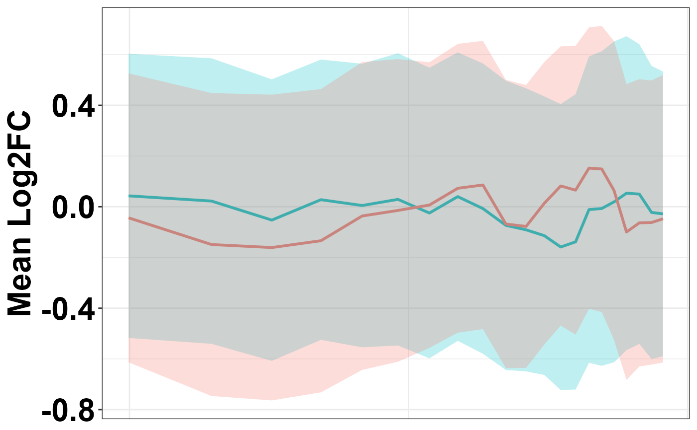
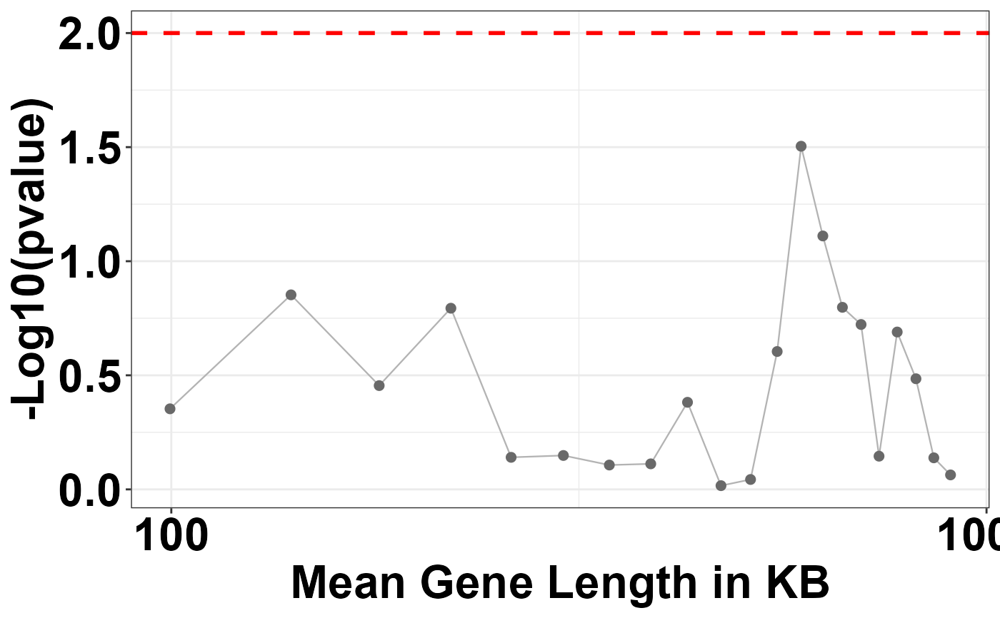

overlayGabelsPlot.RdCreates an overlay plot that displays a moving average of log fold change (log FC) across binned gene lengths. The plot includes a confidence interval around the moving average. This type of visualization helps in identifying trends in gene expression related to gene length.
overlayGabelsPlot(
mat,
bin.size = 200,
shift.size = 40,
comp.between1 = "",
comp.between2 = "",
confidenceinterval = 0.5
)A dataframe where the first column is `comp.mat` representing comparison matrix values, the second column is `log FC` for log fold change, and the third column is `gene.length`.
Numeric, specifies the size of the bin for the analysis.
Numeric, indicates the shift size for the moving window in the binning process.
String, description of the first condition or state being compared.
String, description of the second condition or state being compared.
Numeric, the width of the confidence interval to be displayed on the plot.
A ggplot object that represents the Gabel's plot with a moving average and confidence interval for gene expression analysis.
# Generating a toy dataset
set.seed(123) # For reproducibility
a <- runif(1000, min=-2, max=2)
b <- runif(1000, min=-2, max=2)
c <- sample(2000:1000000, 1000, replace=TRUE)
df <- data.frame(comp.mat = a, logFC.crude = b, gene.length = c)
# Running the overlayGabelsPlot function
gabels_plot <- overlayGabelsPlot(mat = df, comp.between1 = "(WT/WT)",
comp.between2 = "(KO/WT)", bin.size = 200,
shift.size = 40, confidenceinterval=0.50)
# To display the plot
print(gabels_plot)
#> $plot1

#>
#> $plot2

#>
#> $bins.stat
#> mat.mean1 mat.mean2 mat.sd.1 mat.sd.2 bin.width mat.length pval
#> 1 0.042864195 -0.043806885 1.120419 1.139241 200 99.63295 0.44348314
#> 2 0.022417911 -0.149051312 1.125947 1.194493 200 140.23376 0.14040006
#> 3 -0.052676125 -0.160900543 1.109972 1.205452 200 179.88322 0.35086407
#> 4 0.027701045 -0.134101838 1.105242 1.195654 200 220.26734 0.16070232
#> 5 0.004800329 -0.036486411 1.117951 1.213883 200 261.11881 0.72366641
#> 6 0.029006610 -0.014606289 1.152316 1.193377 200 302.65893 0.71024117
#> 7 -0.024828227 0.006612003 1.145764 1.126388 200 344.59583 0.78212813
#> 8 0.039879325 0.072752069 1.137577 1.138712 200 387.35615 0.77286376
#> 9 -0.007300713 0.085727339 1.144655 1.136628 200 429.73099 0.41523294
#> 10 -0.073366117 -0.068106250 1.140813 1.136297 200 472.36845 0.96317588
#> 11 -0.091069062 -0.077733175 1.116112 1.115290 200 513.48933 0.90491638
#> 12 -0.114126456 0.013631904 1.098458 1.113543 200 553.60644 0.24873781
#> 13 -0.158873385 0.081883425 1.127393 1.101222 200 592.35915 0.03133467
#> 14 -0.138473091 0.065374382 1.164526 1.138693 200 629.81592 0.07749341
#> 15 -0.011328632 0.152251573 1.208043 1.109686 200 665.60407 0.15924167
#> 16 -0.007043920 0.148805836 1.240398 1.127809 200 701.64523 0.18937504
#> 17 0.019181467 0.063802386 1.265130 1.178738 200 738.14513 0.71535224
#> 18 0.053352920 -0.099561319 1.237931 1.166315 200 777.00655 0.20430640
#> 19 0.049896865 -0.063606473 1.181917 1.132701 200 819.28318 0.32742114
#> 20 -0.022507347 -0.062234434 1.155639 1.120271 200 861.68520 0.72722346
#> 21 -0.028201784 -0.047529568 1.122318 1.134080 200 903.33565 0.86406465
#> pval.log10 fdr gene.type
#> 1 0.35312289 0.7760955 0
#> 2 0.85263270 0.6129192 0
#> 3 0.45486110 0.7368146 0
#> 4 0.79397786 0.6129192 0
#> 5 0.14046158 0.9124828 0
#> 6 0.14859416 0.9124828 0
#> 7 0.10672209 0.9124828 0
#> 8 0.11189705 0.9124828 0
#> 9 0.38170820 0.7760955 0
#> 10 0.01629440 0.9631759 0
#> 11 0.04339155 0.9501622 0
#> 12 0.60425820 0.6529367 0
#> 13 1.50397493 0.6129192 0
#> 14 1.11073525 0.6129192 0
#> 15 0.79794328 0.6129192 0
#> 16 0.72267727 0.6129192 0
#> 17 0.14548006 0.9124828 0
#> 18 0.68971802 0.6129192 0
#> 19 0.48489328 0.7368146 0
#> 20 0.13833212 0.9124828 0
#> 21 0.06345376 0.9501622 0
#>
#> $bins.info
#> start end pos.logfc neg.logfc overall.logfc mat.length
#> 1 1 200 99 101 no 99.63295
#> 2 41 240 98 102 no 140.23376
#> 3 81 280 99 101 no 179.88322
#> 4 121 320 100 100 yes 220.26734
#> 5 161 360 96 104 no 261.11881
#> 6 201 400 101 99 yes 302.65893
#> 7 241 440 98 102 no 344.59583
#> 8 281 480 99 101 no 387.35615
#> 9 321 520 100 100 yes 429.73099
#> 10 361 560 100 100 yes 472.36845
#> 11 401 600 95 105 no 513.48933
#> 12 441 640 93 107 no 553.60644
#> 13 481 680 92 108 no 592.35915
#> 14 521 720 91 109 no 629.81592
#> 15 561 760 96 104 no 665.60407
#> 16 601 800 97 103 no 701.64523
#> 17 641 840 99 101 no 738.14513
#> 18 681 880 99 101 no 777.00655
#> 19 721 920 103 97 yes 819.28318
#> 20 761 960 100 100 yes 861.68520
#> 21 801 1000 101 99 yes 903.33565
#>